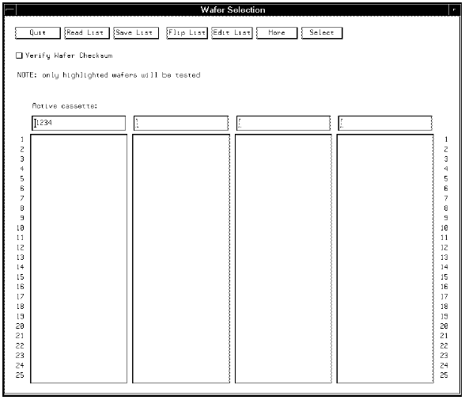

GET_WAFERLIST
Procures a file containing a list of your wafers. You can specify up to four lists. The expression also brings up the Wafer Selection screen, see the figure below.
The line below is taken from the wafer_auto application model. This line results in the wafer selection screen shown below.
GET_WAFERLIST({no_of_wafers},/tmp,{Lot_id},/tmp/{Lot_id}.waf_list,,,,,,);
